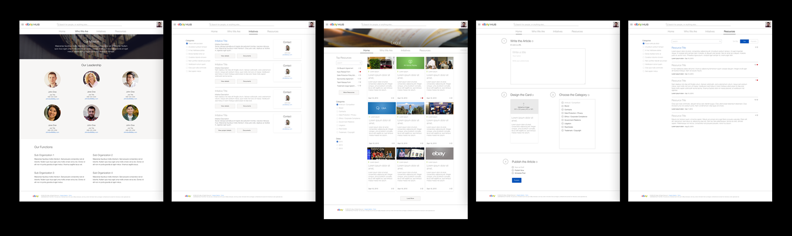

Case Study
eBay HUB
— You Just Made My Day — Creating an employee-recognition experience that made appreciation more visible and meaningful while supporting a scalable culture of recognition across eBay HUB.
View Demo
My Role

Employee Recognition HUB
I led the design of You Just Made My Day, an internal recognition product integrated into eBay HUB. The experience made recognition fast and personal while giving managers appropriate visibility into positive contributions across their teams.
- Led UX and UI design from concept through delivery
- Created wireframes, high-fidelity prototypes, and final interaction flows
- Partnered with HR, internal communications, and engineering
- Helped align the feature with broader employee engagement goals
- Worked with the brand team to ensure the experience felt warm, inclusive, and on-brand
- Designed the interaction to integrate cleanly into the existing employee portal
Credits / Team: HR, Internal Communications, Engineering, Brand
Tools: Sketch, Photoshop, internal prototyping tools, workflow mapping
Background
Turning everyday appreciation into a visible, repeatable part of eBay culture.
eBay wanted a lightweight way for employees to recognize strong work, collaboration, and above-and-beyond contributions. Appreciation was already happening, but it was often informal, buried in private channels, and difficult for managers or broader teams to see.
At a company the size of eBay, strong work happens across teams, offices, and time zones every day. But recognition does not always travel as easily as the work itself. A thoughtful thank-you might be shared in a hallway conversation, a private message, or a team thread, then disappear before it can reinforce broader team culture.
The opportunity was not simply to add another internal feature. It was to create a lightweight experience that could make appreciation feel easy, genuine, and worth sharing without turning recognition into a heavy HR workflow.
So how might we design a recognition experience that helps employees celebrate great work in real time while making those moments more visible, meaningful, and scalable across eBay?
Problem
Recognition was happening, but it was fragmented and easy to miss.
The broader HUB ecosystem already supported internal content and communication, but recognition was still missing a dedicated, lightweight experience.
- Recognition often stayed siloed within teams
- Managers did not always have visibility into the positive impact their team members were making
- Existing channels for appreciation felt either too informal or too disconnected from day-to-day work
- The company lacked a lightweight, repeatable way to celebrate contributions across locations and functions
- Any solution needed to feel authentic and uplifting, not procedural or performative
The problem was not a lack of goodwill. People wanted to acknowledge one another. The problem was that the experience for doing so was not structured to make those moments easy to share, easy to see, or easy to carry forward.
Discovery
Understanding how appreciation was already happening and what made it feel real.

Early system mapping clarified how recognition could fit into HUB without feeling disconnected from the larger employee portal.
I started by working with HR and internal communications stakeholders to understand eBay’s engagement goals, existing recognition programs, and how the employee portal was already being used.
I also spoke with employees across teams to learn how they currently shared appreciation, what kinds of recognition felt meaningful, and where existing tools fell short.
- Met with HR and internal communications to understand culture and engagement goals
- Interviewed employees across departments to learn how appreciation was currently shared
- Identified the qualities that made recognition feel genuine rather than performative
- Reviewed portal usage patterns to find the best entry points for the feature
- Looked for ways to keep the experience visible but non-disruptive
One key insight emerged early: the value of the feature would come from its speed and sincerity. If the experience felt cumbersome, overly formal, or disconnected from daily work, people would not use it consistently.
Strategy
Balancing speed, authenticity, manager visibility, and enterprise scale.
The strategy centered on making recognition feel effortless while giving it enough structure to create value across the organization.
The experience needed to let someone send a message in under a minute, but it also needed to make that moment more visible by reaching both the recipient and their manager. Just as important, it had to feel warmer and more celebratory than a standard internal workflow.
- Make recognition fast and lightweight
- Increase visibility for both recipients and managers
- Preserve a sense of personal authenticity
- Create a visually uplifting experience that stood apart from traditional HR tools
- Build a simple system that could scale across the employee portal over time
Rather than treating recognition as a formal review mechanism, I positioned it as a small but meaningful social interaction—one that could strengthen relationships while reinforcing the culture eBay wanted to build.
Solution
A lightweight recognition flow with a high-visibility entry point on the eBay HUB homepage.

The final experience made recognition feel simple, celebratory, and integrated into the everyday rhythm of work.
I designed a one-screen recognition experience where employees could quickly search for a colleague, choose a recognition category, and write a short personalized message.
Because the feature was part of eBay’s Employee HUB, it needed prominent placement on the HUB homepage. This gave recognition high visibility while keeping the flow lightweight and easy to complete.
- A fast, one-screen interface for sending recognition
- Search and selection tools to quickly find a colleague
- Recognition categories to add lightweight structure and context
- A short-form message field that kept the interaction personal and easy
- Email and portal notifications for the recipient
- A copy sent to the recipient’s manager for added visibility
- An archive view so employees could revisit messages they had sent or received
To make the experience feel distinct from administrative tools, I also designed cheerful visual treatments, subtle motion, and branded celebratory elements that reinforced the emotional tone of the feature without overwhelming the interaction.
Impact
Making appreciation easier to give, more visible to teams, and meaningful to retain.

- Hundreds of You Just Made My Day messages were sent in the first month
- Employees reported that the tool made it easier to recognize good work in the moment
- Managers appreciated having a visible record of positive feedback
- The feature helped reinforce a stronger culture of collaboration, appreciation, and team connection
- The portal gained a more human, emotionally resonant interaction point within a broader internal ecosystem
Beyond the usage numbers, the feature succeeded because it made recognition feel both easy and meaningful. It transformed appreciation from something occasional and informal into something more visible, repeatable, and culturally reinforcing.